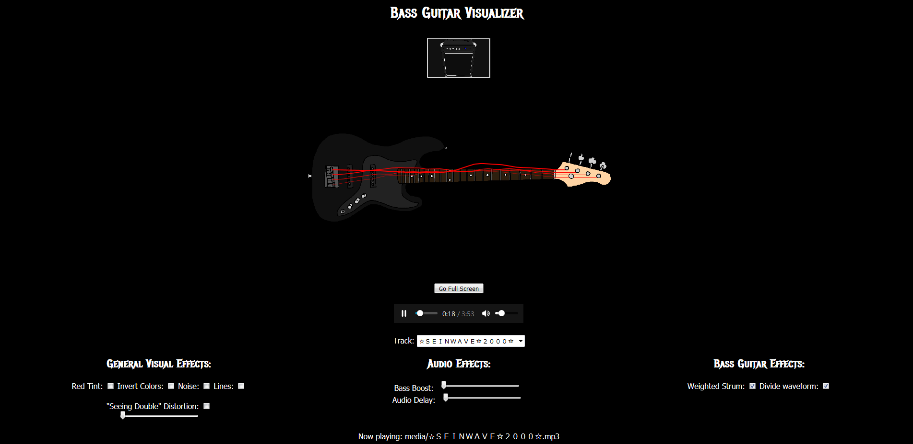

This Audio Visualizer can play one of 3 tracks, and visualize its waveform via the bass guitar view, or its frequencies via the amplifier view. There are various effects that can be activated to change the experience up.
The program was written in JavaScript, using Canvas for visuals, and Web Audio for handling audio data. It was made for a web development class in the Spring of 2018.
